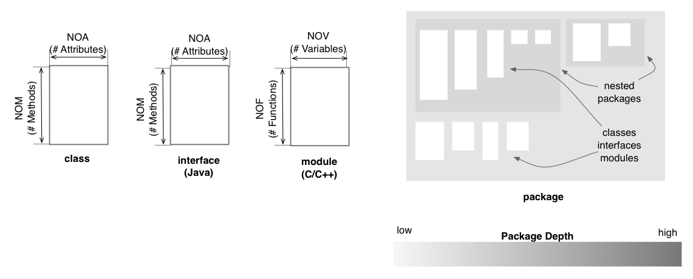

Package Map
The Package Map shows the composition of the system from the
standpoint of the abstract packaging mechanism available in the
programming language, in which the system was developed. In the case of
Java, this corresponds to the package structure of the system, while in
the case of C and C++, the package structure reflects the folder
structure of the source code on disk. Package Maps can be generated
either for the entire system, or just for one class, in which case, the
map will contain only the enclosing packages of the the class itself
and its collaborator classes and modules.
Entities and Layout
The Package Map shows packages as a series of nested gray rectangles.
The shade of gray represents the nesting depth of the corresponding
package. In addition, classes, interfaces (Java) and modules (C and
C++) are represented as white rectangles inside their corresponding
package. The horizontal dimension of these squares is proportional to
the number of attributes / global variables, while the vertical
dimension is proportional to the number of methods / global functions,
defined by each class, interface or module.

Quality perspectives
Complexity, Coupling,
Design Flaws, Encapsulation
Metrics used
NOA, NOF, NOM,
NOV